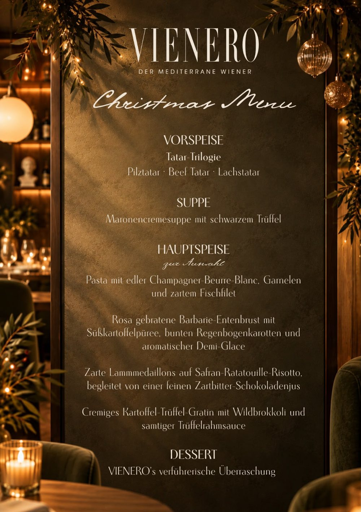

Weihnachten im Restaurant in Wien
Am Heiligen Abend und am Christtag feiern wir Weihnachten mit einem festlichen Menü. Am 24. und 25. Dezember servieren wir im VIENERO am Stadtpark ausschließlich unser Christmas Menu: vier Gänge, Wiener Gastlichkeit und ein Hauch Mittelmeer.
Das Christmas Menu

99,99 Euro pro Person. Am 24. und 25. Dezember ausschließlich dieses Menü.
Küche an beiden Tagen von 17 bis 22 Uhr.
Weihnachten am Stadtpark
Ob mit der Familie, mit Freunden oder zu zweit: Lassen Sie sich an den Feiertagen verwöhnen, ohne selbst am Herd zu stehen. Das VIENERO liegt am Dr.-Karl-Lueger-Platz direkt am Stadtpark, die U3 Station Stubentor ist vor der Tür, der Stephansdom etwa zehn Gehminuten entfernt.
Planen Sie eine Feier mit Ihrem Team oder eine größere Gesellschaft in der Adventzeit? Dann finden Sie alles auf unserer Seite zur Weihnachtsfeier. Und für den Jahreswechsel gibt es unser Silvestermenü mit Musik.
Häufige Fragen
Was gibt es am 24. und 25. Dezember im VIENERO?
Am Heiligen Abend und am Christtag servieren wir ausschließlich unser Weihnachtsmenü mit Tatar Trilogie, Maronencremesuppe mit schwarzem Trüffel, einer Hauptspeise zur Auswahl und einem Dessert.
Was kostet das Weihnachtsmenü?
Das Christmas Menu kostet 99,99 Euro pro Person.
Wann gibt es das Weihnachtsmenü?
Am 24. und 25. Dezember, die Küche ist an beiden Tagen von 17 bis 22 Uhr geöffnet.
Gibt es an diesen Tagen auch die normale Karte?
Nein. Am 24. und 25. Dezember gibt es ausschließlich das Weihnachtsmenü.
Gibt es eine vegetarische Hauptspeise?
Ja, das cremige Kartoffel Trüffel Gratin mit Wildbrokkoli und Trüffelrahmsauce. Bitte geben Sie bei der Reservierung Bescheid, wenn jemand vegetarisch isst.
Wie reserviere ich?
Online über unsere Reservierungsseite, per E-Mail an Reservierung@vienero.at oder telefonisch unter 01 913 70 05. Wir empfehlen, früh zu reservieren.
Besuch
Öffnungszeiten
Mo bis Sa 12:00 bis 24:00
So 17:00 bis 24:00
Küche bis 22:00, Bar bis 24:00
Adresse
Dr.-Karl-Lueger-Platz 3
1010 Wien, am Stadtpark
U3 Stubentor vor der Tür
Google Maps